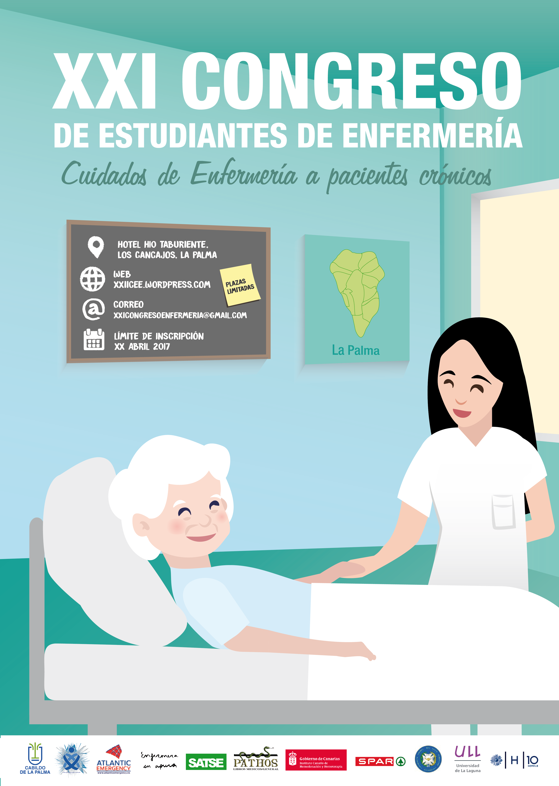
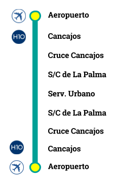
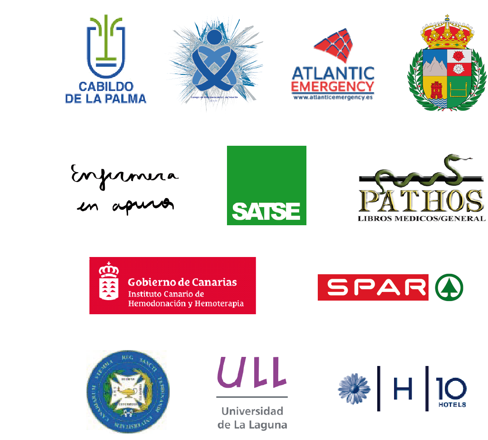

Bienvenidos
Estimados Estudiantes de Enfermería:
Desde el Comité Organizador, queremos poner en su conocimiento la realización del XXI Congreso de Estudiantes de Enfermería de Canarias, que este año tendrá su sede en la isla de La Palma los días 5 y 6 de Mayo del presente año.
La dirección y realización de este congreso recae esta vez sobre los estudiantes de la Facultad de Ciencias de la Salud de La Universidad de La Laguna; que, aunándonos, nos movemos para que este XXI Congreso motive y conciencie a todos los estudiantes de Enfermería de Canarias, con la colaboración de todas aquellas personas y organismos dispuestos a ayudar y disfrutar con nosotros de este proyecto.
El tema central de este XXI Congreso será sobre "Los cuidados enfermeros a pacientes con enfermedades crónicas"; haciendo hincapié en todas aquellas afecciones que son prevalentes en nuestro archipiélago.
Asimismo, les ofrecemos este sitio web para que puedan obtener la información necesaria acerca del lugar de realización del congreso y de la programación del mismo, así como la opción de contactar con nosotros para aclarar cualquier duda que pueda surgirles.
Atentamente,
Comité Organizador del XXI Congreso de Estudiantes de Enfermería.

Programa
Descargar programa
Viernes, 5 Mayo 2017:
- 8:00-8:45 Entrega de documentación
- 9:00-9:30 Acto de apertura
- Bienvenida a cargo del Comité Organizador del Congreso.
- Presentación de los miembros del Comité Científico.
- Información general sobre el Congreso y el itinerario.
- 9:30-10:15 Ponencia: ¿Qué es la enfermería de enlace?
- Descripción del rol de la enfermera de enlace.
- Funciones de la enfermera de enlace.
- Importancia de la enfermera de enlace en la continuidad de los cuidados.
- 10:30-11:00 Exposición de trabajos a cargo de alumnos del Grado de Enfermería.
- 11:00-11:20 Coffee Break.
- 11:30-12:15 Ponencia: Principios básicos de la ventilación mecánica.
- Explicación general de los principios básicos de la ventilación.
- Descripción de los tipos de ventilación mecánica:
- Ventilación mecánica no invasiva:
- Características del paciente tipo para la VMNI.
- Descripción de los modos de ventilación no invasiva: modo CPAP y modo BIPAP.
- Beneficios y complicaciones asociadas a la VMNI.
- Ventilación mecánica invasiva:
- Principios básicos de la intubación orotraqueal.
- Descripción del ciclo ventilatorio.
- Descripción de las modalidades de VMI.
- Beneficios y complicaciones asociadas a la VMI.
- Ventilación mecánica no invasiva:
- 12:30-13:15 Ponencia: Enfermería en el cuidado de pacientes con hemodiálisis.
- Descripción de las patologías renales.
- Descripción de la diálisis peritoneal.
- Hemodiálisis:
- Bases fisiologicas de la hemodiálisis.
- Indicaciones para la hemodiálisis.
- Acceso vascular para la hemodiálisis.
- Cuidados de enfermería al paciente en hemodiálisis:
- Valoración del paciente en tratamiento con hemodiálisis.
- Cuidados del equipo de hemodiálisis.
- Cuidados al catéter de hemodiálisis.
- Posibles complicaciones durante la hemodiálisis.
- Posibles complicaciones después de la hemodiálisis.
- 13:30-14:00 Exposición: Atención de enfermería a la muerte tranquila. Realizada por la alumna Cristina P.
- Explicación de la teoría del final de vida tranquilo.
- Conceptos principales de esta teoría:
- Ausencia del dolor.
- Experiencia de bienestar.
- Experiencia de dignidad y respeto.
- Estado de tranquilidad.
- Proximidad de los allegados.
- Metaparadigmas desarrollados en la teoría.
- Beneficios de la puesta en práctica de esta teoría.
- Papel de la enfermería en el final de la vida.
- 14:00-16:00 Almuerzo.
- 16:30-17:30: Talleres.
- Taller 1: Actuación en emergencias.
- Introducción teórica:
- Conceptos de la RCP básica.
- Conceptos de la RCP avanzada.
- Actuación práctica frente a distintos casos clínicos.
- Introducción teórica:
- Taller 2: Relajación.
- Introducción teórica:
- Explicación de las distintas técnicas de relajación.
- Importancia del control del estrés.
- Beneficios para la salud.
- Realización de un taller práctico grupal.
- Introducción teórica:
- Taller 3: Risoterapia.
- Introducción teórica:
- ¿Qué es la risoterapia?
- Bases sobre las que se asienta la risoterapia.
- Principales beneficios de la risoterapia.
- Realización de un taller práctico grupal.
- Introducción teórica:
- Taller 1: Actuación en emergencias.
- 17:30-17:45: Coffee Break.
- 17:45-18:45: Talleres.
- Taller 1: Actuación en emergencias.
- Taller 2: Relajación.
- Taller 3: Risoterapia.
- 18:45-19:45: Talleres.
- Taller 1: Actuación en emergencias.
- Taller 2: Relajación.
- Taller 3: Risoterapia.
- 19:45-20:00 Firma de salida.
Sábado, 6 Mayo 2017:
- 8:00-8:45 Firmas de la entrada.
- 9:00-10:45 Exposiciones de trabajos a cargo de alumnos del grado de enfermería
- 11:00-11:20 Coffee Break.
- 11:30-12:15 Ponencia: Tratamiento de las úlceras por presión (UPP).
- Descripción de las UPP.
- Valoración enfermera de las UPP, a través de la escala de Braden.
- Medidas preventivas en las UPP:
- Control de los factores etiológicos.
- Control de las factores coadyuvantes.
- Tratamiento de las UPP:
- Descripción de los distintos tipos de apósitos y criterios para la elección.
- Principios básicos de la limpieza de la herida.
- Preparación del lecho de la herida. Concepto TIME.
- Desbridamiento.
- Actuación frente a las heridas infectadas.
- Proceso de cicatrización. Fases del proceso de cicatrización.
- Complicaciones de las UPP.
- 12:30-13:15 Ponencia: La enfermería en la diabetes mellitus.
- La diabetes mellitus y su tratamiento:
- Concepto, clasificación y diagnóstico de la DM.
- Tratamiento dietético.
- Tratamiento farmacológico:
- Antidiabéticos orales.
- Insulina.
- Complicaciones metabólicas:
- Complicaciones metabólicas agudas.
- Complicaciones metabólicas crónicas.
- El pie diabético.
- Valoración y cuidados de enfermería en la DM.
- La diabetes mellitus y su tratamiento:
- 13:30-14:00 Acto de clausura y entrega de premios.
- 14:00-14:30 Firma salida y entrega de diplomas por la asistencia.
- 15:00 Chuletada (opcional).
Inscripción
Costo de inscripción: 25€
Fecha límite: 17 de abril de 2017 o hasta completar aforo
Plazas limitadas (160)
Al inscribirse en el congreso mediante el formulario siguiente, en un plazo de 2 días se le mandará un correo aceptando o denegando su inscripción dependiendo del número de asistentes ya inscritos.
En todo caso, si es denegada, entrará en una lista extraordinaria por si se diera la baja de algún asistente. Si esto ocurriera será informado por correo electrónico para completar la inscripción.
Si la inscripción se acepta, recibirá un correo con toda la información pertinente para realizar el pago del mismo.
En lo que respecta a los talleres, la preferencia de los mismos será por orden alfabético.
En el costo de incripción se incluye almuerzo y 3 Coffee Breaks.
Contacto
Para cualquier duda y/o sugerencia, pueden contactarnos a través del correo electrónico, o bien a través de nuestra página de Facebook.
xxicongresoenfermeria@gmail.com

Ubicación
La ejecución del Congreso tendrá lugar en el Hotel H10 Taburiente, situado en la conocida Playa de Los Cancajos, La Palma.
Dirección: Calle Playa de Los Cancajos, s/n, 38712 Breña Baja, Santa Cruz de Tenerife.
Página web: www.h10hotels.com
Teléfono: 922181277
Entrega de trabajos
La fecha límite de entrega de trabajos es: 27 de marzo de 2017.
Pueden entregarlo a través del correo electrónico: comitecientifico.xxiceec@gmail.com
Normas
En el siguiente enlace puede descargar las normas para la presentación de trabajos y póster.
Descargar normas
Preguntas frecuentes
¿Cuándo es el congreso?
El 5 y 6 mayo 2017.
¿Cuál es la fecha límite de inscripción?
17 de abril 2017 o hasta completar aforo.
¿Cuál es el precio de inscripción?
25€.
¿Qué tengo que hacer para inscribirme?
Rellenar el formulario de inscripción y esperar la respuesta en forma de email por parte de la organización.
¿Cuántas plazas hay disponibles?
Hay 160 plazas y son limitadas.
¿Cómo puedo llegar al lugar?
Puedes ver toda la información relativa a la estancia y transporte en la pestaña “Ubicación”.
¿Puedo presentar un trabajo en el congreso?
Sí. Primero contacta con nosotros mediante el correo electrónico comitecientifico.xxiceec@gmail.com para comentarnos tu propuesta. Te responderemos con la mayor celeridad posible. La fecha límite para la entrega de trabajos es el 27 de marzo del 2017.
¿Qué temas se tratarán?
La temática del congreso está centrada en los cuidados de Enfermería al paciente crónico, pero para más detalle, puedes consultar la pestaña “Programa”.
Transporte
Desplazamiento a la isla y alojamiento
Descargar detalles de alojamiento y vuelo
Desplazamiento Aeropuerto-Hotel
| Línea 500 | |||||||||||||||||||||||||||||||||||||||||||||||||||||||||||||||||||||||||||||||||||||||||||||||||||
| LABORALES | |||||||||||||||||||||||||||||||||||||||||||||||||||||||||||||||||||||||||||||||||||||||||||||||||||
| Horas de salida desde el aeropuerto: 06:30 (Sale de Avda. El Puente) - 07:00 (Sale de Avda. El Puente) - 07:10 - 07:40 - 08:10 - 08:40 - 09:10 - 09:40 - 10:10 - 10:40 - 11:10 - 11:40 - 12:10 - 12:40 - 13:10 - 13:40 - 14:10 - 14:40 - 15:10 (Termina en Benahoare) - 15:40 - 16:40 - 17:40 - 18:40 - 19:40 - 20:40 - 21:40 - 22:40 (Termina en Benahoare) |
|||||||||||||||||||||||||||||||||||||||||||||||||||||||||||||||||||||||||||||||||||||||||||||||||||
| SABADOS | |||||||||||||||||||||||||||||||||||||||||||||||||||||||||||||||||||||||||||||||||||||||||||||||||||
| Horas de salida desde el aeropuerto: 07:00 (Sale de Avda. El Puente) - 07:40 - 08:40 - 09:40 - 10:40 - 11:40 - 12:40 - 13:40 - 14:40 - 15:40 - 16:40 - 17:40 - 18:40 - 19:40 - 20:40 - 21:40 - 22:40 (Termina en Benahoare) |
|||||||||||||||||||||||||||||||||||||||||||||||||||||||||||||||||||||||||||||||||||||||||||||||||||

Horario línea 500 Transportes La Palma
El precio del trayecto Aeropuerto-Cancajos y Cancajos-Aeropuerto es de 1.37€. Para más información, www.transporteslapalma.com/precios/
